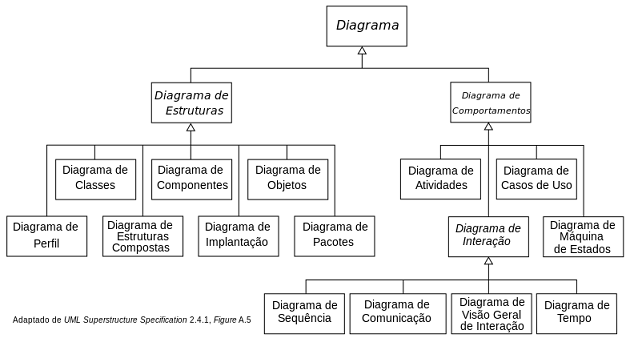

-
SEQUÊNCIA DE ETAPAS DA GRSI
- ETAPA 1
- Ação de evitar o risco
- Critérios de impacto
- Monitoramento, análise crítica e melhoria do processo de gestão de riscos
- Modificação do risco
- Identificação das vulnerabilidades
- Critérios para a aceitação do risco
- Retenção do risco
- Organização para gestão de riscos de segurança da informação
- ETAPA 2
- Avaliação de riscos
- Critérios para a avaliação de riscos
- Identificação dos ativos
- Monitoramento e análise crítica dos fatores de risco
- Identificação de riscos
- Critérios básicos
- ETAPA 3
- Identificação das consequências
- Análise de riscos
- Definição do contexto
- Monitoramento e análise crítica de riscos
- Avaliação das consequências
- Avaliação da probabilidade dos incidentes
- Determinação do nível de risco
- ETAPA 4
- Identificação das ameaças
- Tratamento do risco
- Processo de avaliação de riscos
- Escopo e limites
- Compartilhamento do risco
- Aceitação do risco
- Comunicação e consulta do risco
- Identificação dos controles existentes
- ETAPA PARALELA 1
- ETAPA PARALELA 2
